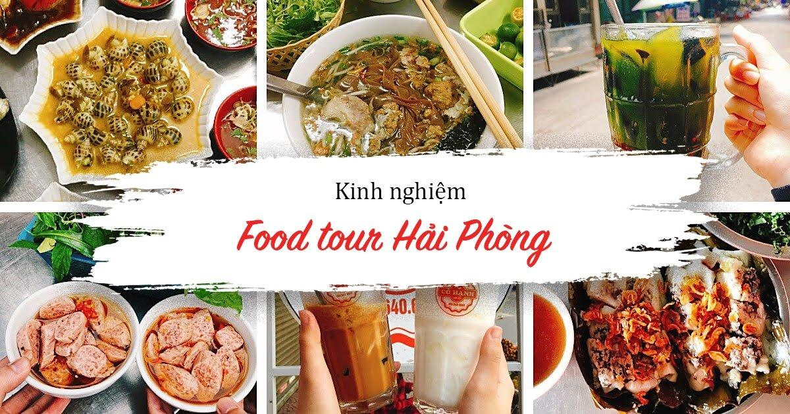
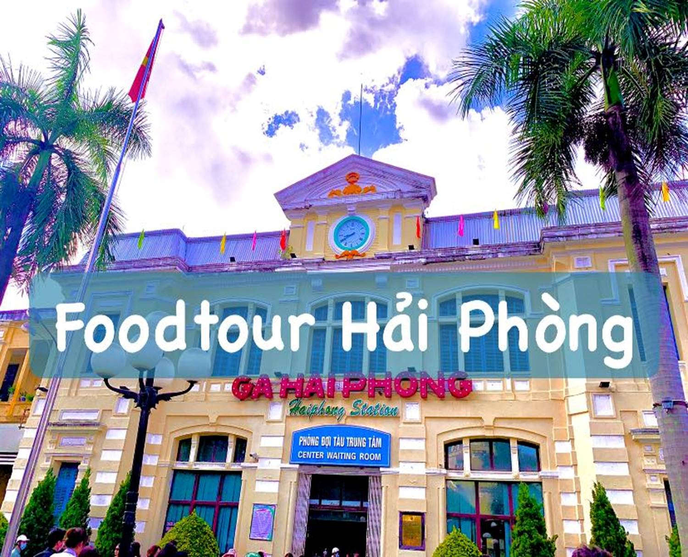
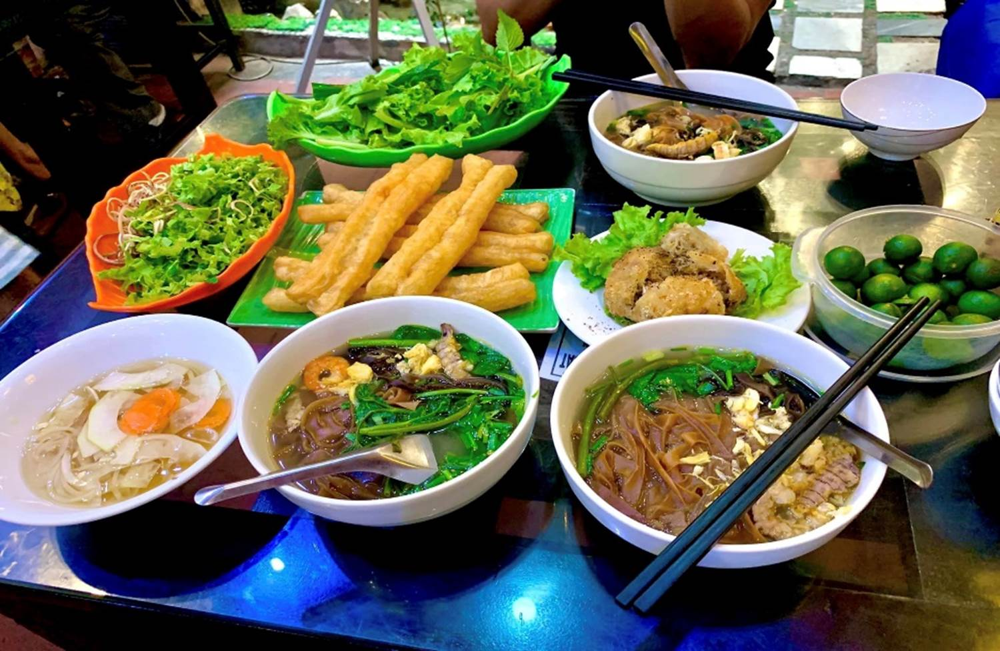
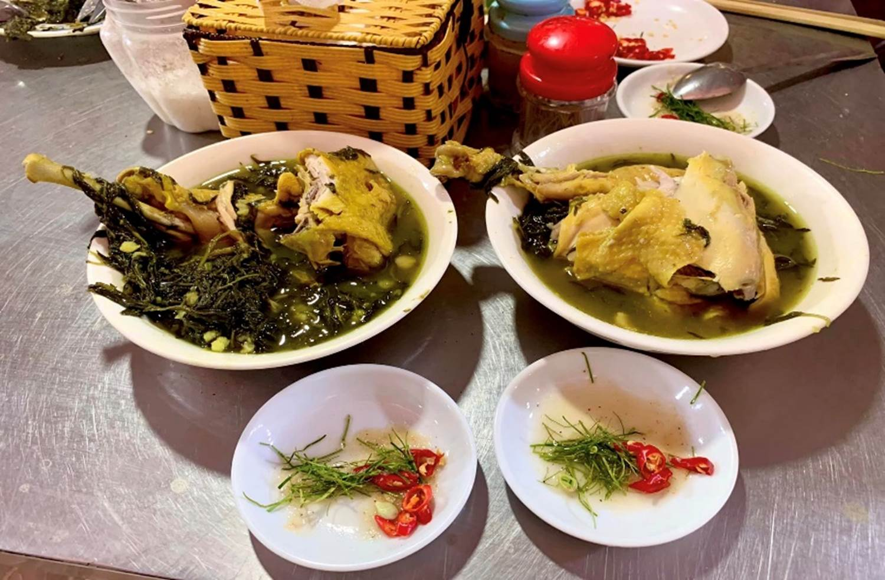
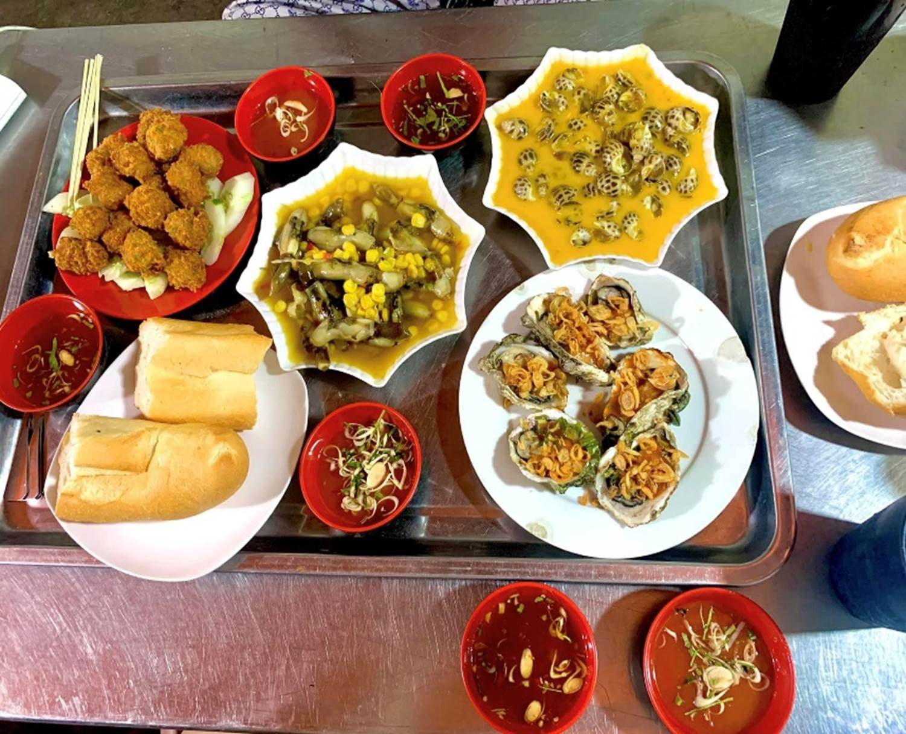

FOODTOUR Hải Phòng 2 Ngày 1 Đêm
Là
một tín đồ ăn uống nên quyết tâm phải
đi cho bằng được
𝑭𝑶𝑶𝑫𝑻𝑶𝑼𝑹 𝑯𝑨̉𝑰 𝑷𝑯𝑶̀𝑵𝑮 2N1Đ 

——————————///
Có ý
định đi từ đầu tuần nhưng tận
mãi cuối tuần mới chốt đi nên mọi thứ
đều vội vàng  20-21h vẫn lang thang trên
hội nhóm tìm homestay, ks và đặt vé tàu trong khi 6h sáng hôm
sau phải lên tàu r
20-21h vẫn lang thang trên
hội nhóm tìm homestay, ks và đặt vé tàu trong khi 6h sáng hôm
sau phải lên tàu r
Bất
chấp hôm trước vừa tiêm vacxin covid mũi 4 hôm sau
vẫn đi HP trong tình trạng đau đầu ng
mệt mỏi với vài viên thuốc bên người
DI
CHUYỂN 

- Vì muốn
đi trải nghiệm đi tàu nên mình chỉ book vé tàu 1
chiều HN (ga Gia Lâm)-HP ghế mềm điều hoà trên
momo giá vé cuối tuần ~105k/ng. Mn nếu đi tàu khứ
hồi thì có thể đi xe máy ra ga rồi gửi ngay
cổng ga ạ. Xuất phát chuyến sớm nhất là
~6h25 đến HP ~8h30
-
Đến ga HP mình mới tìm chỗ cho thuê xe máy (vì
trước đó tính đi taxi nên k đặt hỏi
trước). Ở xquanh ga cũng có rất nhiều
chỗ cho thuê xe ạ
Các b
có thể tham khảo chỗ mình thuê a/c dặn dò cách đi
đứng chi tiết lắm để k bị các A áo vàng
hỏi thăm  (sđt: 0904808699)
(sđt: 0904808699)
- Lúc
về tụi mình đi xe khách giường nằm
Phương Thảo tuyến Lạng Sơn-Hải Phòng
(sđt: 091 2080971) b nào muốn đi xe khách tuyến
Lạng Sơn-Bắc Giang- Bắc Ninh- Quế Võ- Nam Sách-
Sao Đỏ- Hải Phòng có thể tham khảo ạ.
Trộm
vía tỉ lần khi mà 1 đứa oto đi qua mở
cửa xe còn say như mình lần này k hề bị say tàu xe
tẹo nào 
CHỖ
Ở 
Mình
thuê phòng ở Homestay của c Giang
Pham Huong bên Văn Cao, hơi cách xa ga 1 chút nhưng bù
lại gần 1 số điểm ăn uống 
Giá
400k/1 phòng 2 ngủ sạch sẽ.
Đ/c:
24/174 Văn Cao
 ĂN
UỐNG
ĂN
UỐNG 

 Bánh
đa cua bể Bà cụ - 179 Cầu Đất
Bánh
đa cua bể Bà cụ - 179 Cầu Đất
Đây
là điểm đến đầu tiên khi tụi mình
đặt chân tại Hải Phòng
không
gian quán sạch sẽ mát mẻ, quán rất đông khách
nhưng lên đồ khá là nhanh, theo cảm nhận riêng thì
mình thấy nước dùng hơi nhạt, tuy nhiên vì
đang đói nên ăn vẫn ok 
Mới
đầu nhìn ít mà ăn mãi k hết.
Mình
có gọi thêm 1 xuất Nem cua bể nữa
Giá
30-50k/ bát
Dừa
dầm cô Thuý - 20/124 Lạch Tray
Ngon
đỉnh luôn ạ, thơm sánh full topping mà giá chỉ 20k/
cốc
đang
đi đường nắng mệt thì đúng là tìm
được chân ái cuộc đời. Có 1 lưu ý
nhỏ cho mn là cô bán kiểu tại nhà, ngõ vào hơi nhỏ
nên xe để gọn gàng sau ra còn dễ lấy ạ
Starbucks-
Văn Cao
Vào
đây là do trong lúc tụi mình chờ nhận phòng thoii
ạ chứ nó k nằm trong list địa điểm
đi chơi ăn uống bọn mình gọi 2 món
nước với giá 105k/ cốc, sang, ngon, chất
lượng xứng đáng đồng tiền bát gạo 
Ăn
vặt chợ Cát Bi - 34 Lý Hồng Nhật
Sau
nghỉ ngơi chiều dậy đây là điểm
tụi mình chọn đến trước tiên, phải nói
đúng kiểu thiên đường ăn uống vậy,
ăn no mệt nghỉ lại ăn tiếp
được 
Bánh
bèo, bánh giò
Nóng,
ngon, nhiều nhân lắm lun

Gà
tần cô Luyện
Mn có
thể chọn phần cánh hoặc phần đùi, gà
thơm nức mũi, đậm mùi thuốc bắc và lá
ngải. Muốn ăn thêm xuất nữa mà phải
nhịn dành bụng ăn thứ khác 
Giá
biển, trà đào
Món
ăn nên thử, đây là lần đầu mình
được nghe đến và ăn thử, vị
hơi lạ
thấy
họ bán ra cái bát con con tưởng mà được
nhiều lắm, ngồi ăn nhằn mãi k hết lun ý
Bì bò
Khúc
này là khá no rồi nhưng thấy rì viu khá nhiều nên dù
đợi lâu tụi mình cũng quyết ăn thử cho
bằng được ( thấy cả chợ có 2 quán bán
thôy à). Có 2 loại nước chấm là tương và
mắm tôm cho mn lựa, bản thân ăn được
cả nên mk thấy chấm gì cũng ôce 
Chè
Trang
Nghe
mấy cô bán bánh ở đây bảo là đã đến
đây thì nhất định phải ăn chè Trang vì
nổi tiếng ngon nên vẫn xếp hàng dài để
đợi mua mang về 
Sắn
dẻo…
Thật
sự là còn rất nhiều món trong chợ chưa
được ăn thử vì quá no r và cần phải di
chuyển đến địa điểm tiếp theo nên
đành rời đi 
Quán
Ốc Thuỷ Dương - 30/263 Lạch Tray

Đọc
trên bản đồ foodtour ghi 21h đóng cửa, nhưng
do đi chơi về muộn 21h20 vẫn đánh liều
ra thì hên quá 22h họ mới đóng nên vẫn
được thưởng thức. Tụi mình gọi
ốc mong tay xào bơ tỏi ngô, ốc hương bơ
tỏi, hàu nướng mỡ hành và nem rán. Đồ lên
siêu nhanh, nóng, thơm ngon lại còn siêu rẻ
Giá
khoảng 7-80k/ món
Bún
cá cay Miền Duyên Hải- 227 Văn Cao
Mình
gọi bún thập cẩm.
Với
1 đứa không thích ăn cá như mình còn đổ
ngục trước món bún cá này, đến lúc về
vẫn tiếc không đi ăn thêm vài quán để
được thẩm thêm 
Nước
đậu, hạt sen
Sinh
tố, kem, nước ép, trà sữa
Mua
dọc trên những con phố mà tụi mình lượn
lờ qua
Bánh
mì cay, cafe cốt dừa
Mua
bánh mì mang về tại Ông già Khánh Nạp 181 Hàng Kênh, và oder
của chị Nguyễn
Thảo My
Mua
oder cafe cốt dừa và dừa dầm mang về ở quán
Cô Hạnh 148 Lương Khánh Thiện
Check
in Đồ Sơn
Dự
tính là sẽ đi ngắm hoàng hôn trên biển sau đó là
tắm biển
Nhưng
ng tính không bằng trời tính Mải ăn trong chợ
quá nên khi ra hơi bị muộn, đi đường
cũng hơi rén, quãng đường bt đi khoảng 30p
thì nay đi mất hơn tiếng, lại còn suýt lạc
được mấy lượt thành ra ngắm hoàng hôn
trên đường và hít không khí biển được 30p
rồi quay lại TP 
________________
Kết
thúc chuyến đi vội vàng, chưa có sự chuẩn
bị gì đặc biệt còn quá nhiều món chưa
được ăn, hẹn Hải Phòng lần sau quay
lại sẽ có những trải nghiệm thú vị
hơn. Hi vọng chia sẻ của mình sẽ giúp
được hành trình foodtour của các bạn thêm thú
vị 
Tuy
mõii người một khẩu vị, thưởng
thức và gu ăn uống khác nhau, nhưng về HP
chắc hẳn đều cảm nhận được
ở đây đồ ăn ngon, con ng nhiệt tình, khí
hậu ủng hộ